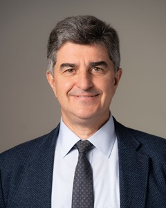
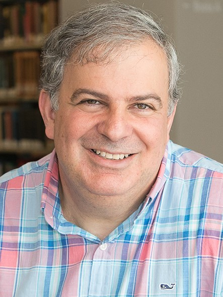
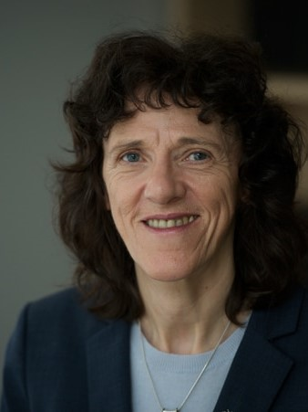
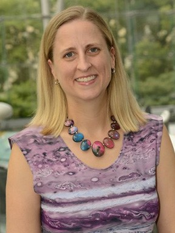
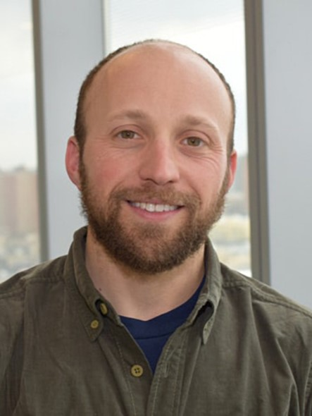
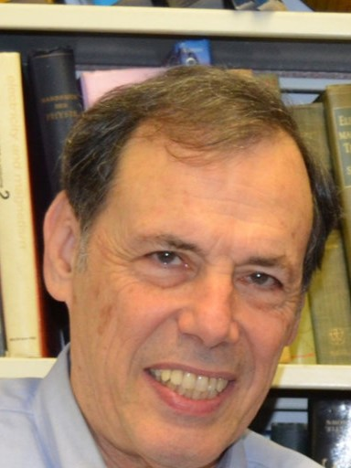

YURY GOGOTSI
Distinguished University and Charles T. and Ruth M. Bach Professor
Director of A.J. Drexel Nanomaterials Institute
Field: Materials Science and Engineering
Website: Nanomaterials group
RESEARCH INTERESTS:
Synthesis and surface modification of inorganic nanomaterials, such as nanodiamond, carbide-derived carbons,
nanotubes, and two-dimensional carbides and nitrides (MXenes). His work on carbon and carbide nanomaterials with
tunable structure and porosity had a major impact on the field of capacitive energy storage.
INVITED SPEAKERS

DAVID SPERGEL
Emeritus Professor of Astrophysical Sciences
President of the Simons Foundation
Field: Astrophysics
Website: Home page
RESEARCH INTERESTS:
Spergel’s interests range from the search for planets around nearby stars to the shape of the universe.
Using microwave background observations from the WMAP Satellite and measurements from the
Atacama Cosmology Telescope the age, shape, and composition of the universe were measured.
These observations have played a significant role in establishing the standard model of cosmology.

JOSHUA BRUMBERG
Professor, Psychology, Biology, Neuroscience, Cognitive Neuroscience
Dean for the Sciences, Provost's Office, Academic Affairs
Website:
https://www.gc.cuny.edu/people/joshua-brumberg
RESEARCH INTERESTS:
Joshua C. Brumberg studied Biology at Williams College and then earned a PhD in Neurobiology
from the University of Pittsburgh studying how the rat integrates information from multiple facial
whiskers using physiological and computational techniques. In his laboratory he utilizes physiological
and anatomical methods to study how environmental experience impacts the development
and function of cortical circuits. Dr. Brumberg has published over 60 peer-reviewed articles
and has received multiple grants from the National Science Foundation and the National Institutes of
Health. Currently, his research focuses on how sensory experience shapes the development of cortical circuits.
In addition to his scholarly work Dr. Brumberg has served several administrative functions within CUNY,
including directing their doctoral training in Psychology and is presently the Dean for the Sciences at
The CUNY Graduate Center, in charge of CUNY’s PhD programs in the sciences.
STEVE EVERETT
Provost and Senior Vice President, Provost's Office
The Graduate Center, CUNY
Field: Astrophysics
Website: https://www.gc.cuny.edu/people/steve-everett
RESEARCH INTERESTS:
Steve Everett brings three decades of academic leadership experience at public and private research
universities to his role as Provost and Senior Vice President of the Graduate Center.
His area of academic research is music. Among his recent projects, Everett collaborated on an interdisciplinary
study of the impact of sound and ultrasound on epilepsy. He received a D.M.A. in Music Composition from the
University of Illinois at Urbana-Champaign, following two master’s degrees in music theory and trumpet
performance and a BA in Music History and Literature from Florida State University.

GILLIAN SMALL
President, World Science U
Website:
https://en.wikipedia.org/wiki/Gillian_Small
RESEARCH INTERESTS:
Small received her PhD in the Biological Sciences in 1983 from Wolverhampton Polytechnic. She moved to
the US in 1985 to conduct postdoctoral research at the Rockefeller University in New York,
in the laboratory of Nobel Laureate Christian DeDuve, a cytologist and biochemist.
Previously, Small served on the faculty at the University of Florida (1988), where
she led her own independent research program to study peroxisome biogenesis and the
molecular regulation of lipid metabolism. In 1992, she became a faculty member at
Mount Sinai School of Medicine in New York.
At CUNY, Small was instrumental in redesigning doctoral education in the sciences and in enhancing the
University’s scientific research infrastructure. She established CUNY’s first Postdoctoral
Program for postdoctoral fellows across the University and the Technology Commercialization office.
She also played a key role in establishing several new research institutes, and both envisioned
and developed a new CUNY Advanced Science Research Center.
DIANE I. GREENFIELD
Associate Professor, Environmental Sciences Initiative
Associate Professor of Earth and Environmental Sciences, Queens College
Website: https://asrc.gc.cuny.edu/people/dianne-greenfield/
RESEARCH INTERESTS:
Phytoplankton, microscopic organisms that form the base of aquatic food webs, generate approximately
half of the world’s oxygen through photosynthesis and thus exert considerable influence over nutrient
and carbon cycling.
Dr. Dianne Greenfield and her laboratory study the complex environmental feedbacks between global
change stressors (such as urbanization, nutrients, and climate) and coastal phytoplankton ecology,
physiology, and biogeochemistry. This includes but is not limited to understanding the causes and consequences
of ‘harmful algal blooms’ (HABs), events produced by a subset of phytoplankton
species that result in negative ecological and/or health impacts when populations become
numerically or physiologically dominant.

EMILY RICE
Associate Professor
Macaulay Honors College, CUNY
Field: Materials Science and Engineering
Website: https://macaulay.cuny.edu/directory/emily-rice/
RESEARCH INTERESTS:
Emily Rice is Associate Professor of Astrophysics at at Macaulay Honors College of the City
University of New York (CUNY), faculty in the Physics Ph.D. Program at the CUNY Graduate
Center, and a resident research associate in the Department of Astrophysics at the American
Museum of Natural History (AMNH). She earned her Ph.D. in Astronomy & Astrophysics at UCLA and
Bachelor’s degrees in Physics & Astronomy and German at the University of Pittsburgh. Prior to Macaulay,
Dr. Rice was a member of the faculty at the College of Staten Island.
JOSHUA TAN
Assistant Professor of Natural Sciences at LaGuardia Community College, CUNY
Field: Astronomy and Physics
Website: https://commons.gc.cuny.edu/members/joshuapaultan/
RESEARCH INTERESTS:
Prof. Tan is an optical astronomer intensely interested in observing
the counterparts to short period binary millisecond pulsars. Aside
from that, open problems in binary modeling, neutron star physics, and
three-body dynamics occupy most of his research thinkspace.

ANDREW REINMANN
Assistant Professor, Environmental Sciences Initiative, Graduate center, City University of New York
Assistant Professor of Geography, Hunter College, City University of New York
Field: Forest Ecology, Plant Ecology, Urban Ecology, & Terrestrial Biogeochemistry
Website: https://asrc.gc.cuny.edu/people/andrew-reinmann/
RESEARCH INTERESTS:
Dr. Andrew Reinmann is an ecologist and biogeochemist who focuses on plant ecophysiology and the
terrestrial carbon cycle. He is particularly interested in understanding the effects of
environmental change (e.g., climate change, urbanization, and land cover change) on the drivers of
plant-mediated controls of terrestrial carbon cycling, and nitrogen dynamics as a limiting nutrient, across
a continuum of human-disturbed ecosystems. His research draws from multiple disciplines and combines field
observations, ecosystem experiments, and laboratory analyses with GIS, remote sensing, and modeling.
ORIE SHAFER
Professor, Shafer Lab, Neuroscience Initiative, Graduate center, City University of New York
Field: Neuroscience
Website: https://www.shaferlab.org/
RESEARCH INTERESTS:
Shafer, a neuroscientist and chronobiologist, studies the neurobiological basis of circadian timekeeping,
the mechanism that times sleep and activity; and entrainment, the process by which circadian clocks
are set to local time. His research employs genetic, physiological, imaging, and behavioral methods
to understand how neural networks create a robust yet entrainable circadian rhythm, and he is
particularly interested in how such networks operate when challenged by the unreliability of the
modern light environment. He has been with The Graduate Center since 2019 after his time at the
University of Michigan.

AZRIEL Z. GENACK
Distinguished Professor
Queens College of the City University of New York
Website:
https://physics.qc.cuny.edu/people/faculty/agenack
RESEARCH INTERESTS:
We probe our environment and communicate with one another with classical waves. Because of wave-particle
duality, studies of classical waves also serve as models of electronic transport, involving quantum mechanical
electron waves in the solid state. The goal of our studies of microwave and optical propagation is to provide
a universal description of wave propagation in random systems and to apply the understanding gained to imaging
and communications. We explore the diversity of propagation phenomena in ensembles of sample realizations
which reflect the openness, scattering strength, internal reflection, dissipation or gain, and topology of the system.
YURY DESHKO
Photonics Engineer at NOKIA
RESEARCH INTERESTS:
Dr. Deshko earned a PhD in Physics from the CUNY Graduate Center. His research interests are optics of
condensed Matter and photonics. Currently, he is working for NOKIA as a photonics engineer.